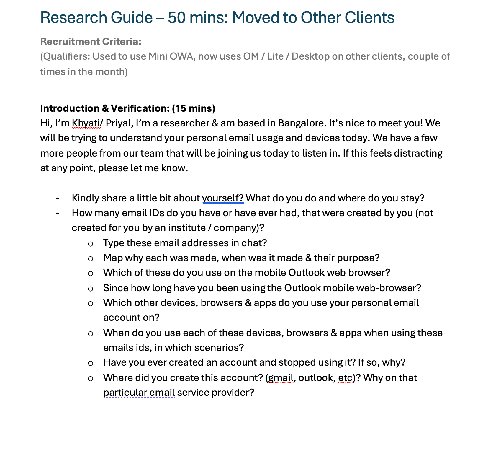
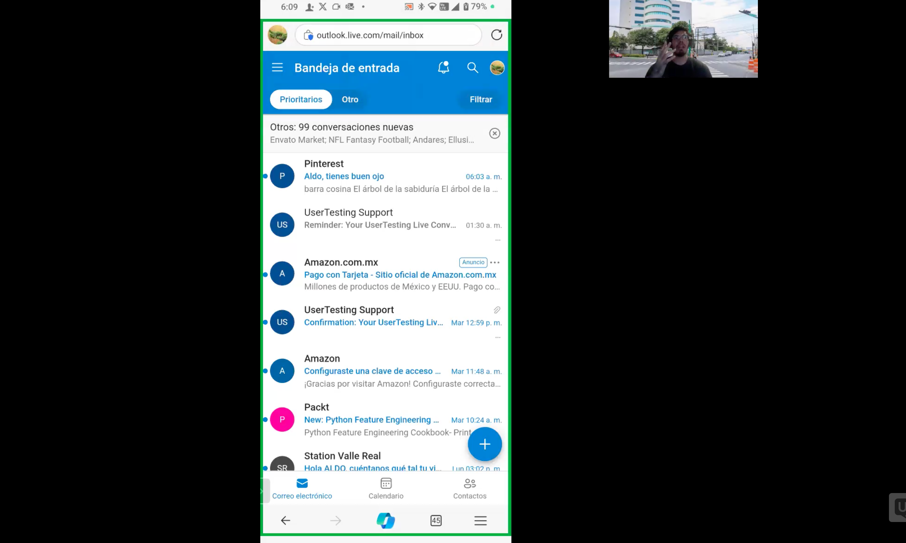
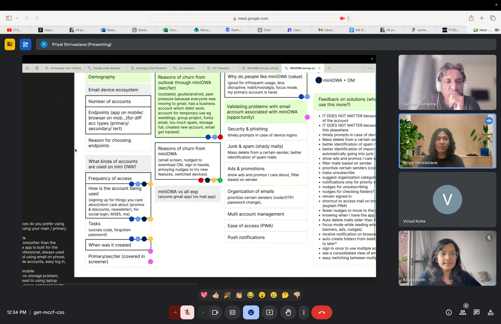
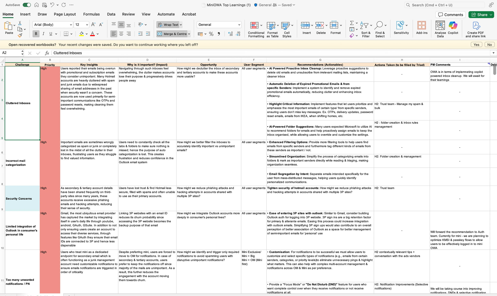
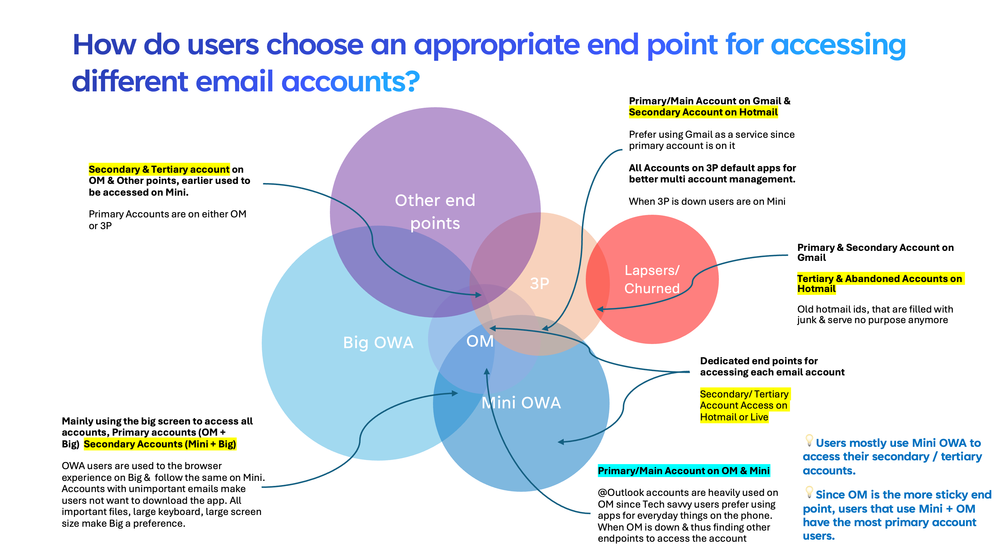

Research framing
Evidence review and hypothesis workshop
Microsoft · 2024
Retention study
The team conducted 36 interviews across six usage groups, followed by a survey with more than 300 responses. The study examined how account purpose, devices, and existing email habits affected retention.
My role
Contract UX Researcherdiscussion guides, moderation, analysis, early report drafts
Timeline
2024within a Sept 2024 – Feb 2025 contract
Study lead
Khyati Sethlead researcher, with researcher and PM partners
Method
Hypothesis workshop, moderated interviews, validation survey
Project context
The product was Mini OWA: the lightweight version of Outlook opened in a phone browser rather than an installed app. Consumer usage was dropping more sharply than expected. The team needed to understand what was causing the decline and the role mobile web still played for different kinds of Outlook users.
The lead researcher and product team reviewed the questions raised by stakeholders and identified what could already be answered through existing evidence. My contribution began with the interview guides and fieldwork, after this initial framing was complete.
Stakeholder hypotheses
Existing evidence
Remaining questions
Methodology
The team reviewed previous research and product data, conducted interviews, and used a survey to assess the qualitative findings with a larger sample. The final synthesis informed product recommendations and planning.
Evidence review and hypothesis workshop
36 people across six behavior cohorts
300+ responses mapped to interview themes
Findings, opportunities, and recommendations
01
02


03

04

Key findings
Participants often managed several email accounts with different purposes. The study grouped these accounts into four broad types. Their importance and content affected how frequently they were checked and whether people used mobile web, an app, desktop, or a third-party client.
The account tied to daily life and important communication.
Checked frequentlyAn alternate address used for selected sign-ups, services, or backup.
Used for specific tasksAn older account crowded with promotions, subscriptions, and junk.
Checked when neededA dormant account that still matters for an occasional recovery or reset.
Used rarelyOutlook mobile web served as a fallback within a broader email ecosystem.

Internal metrics and participant-level data are omitted.
Opportunity areas
The opportunity areas focused on inbox organization, notification controls, multi-account use, and easier access across Outlook services and third-party clients.
Help people clear accumulated junk, find critical messages, and make secondary and tertiary inboxes easier to use.
Based on accumulated secondary and tertiary inbox contentProvide contextual and selective notifications, with prioritization and focus controls.
Based on different account purposes and checking frequencySupport multiple accounts, easier return paths, and shortcuts between mobile web, Outlook apps, and third-party clients.
Based on mobile web's role as a fallback access pointCommunication and impact
PMs used a live tracker of findings, recommendations, and actions. Most findings influenced the following semester's plan.
Leaders and PMs were invited to observe interviews.
Design, product, and engineering joined detailed working sessions.
Findings were presented to leadership in India and global Outlook teams.
What I learned
Understanding retention required looking beyond the mobile website. Participants’ older accounts, devices, installed apps, and long-term email habits also affected how they used it.
The sequence of methods worked well. Existing evidence and stakeholder hypotheses informed the research questions, interviews provided detailed explanations, and the survey was then used to validate the qualitative findings.